Berserker 7 · Milestone retro 1
Written 18 November 2026. Covers 16–17 November 2026: from the decision to rebuild Technophage as Berserker 7 up to the merged game harness (PR #47). Screenshots taken from the live site on 18 November, build d2fd9d7.
In one paragraph: Berserker 7 went from a folder of feedback notes to a published, tested game foundation in two days. All the feedback, design notes and research were turned into a 229-item feature tracker that can be marked up on its live page. A Vite + three.js project is built and deployed on every merge with a visible version label. On top of it sits a game harness: a fixed 60 Hz loop, layered scenes (background, main, overlays), queued scene changes, fades, a loading scene, and three ways to leave a scene (suspend, unload, snapshot), with the harness itself freeing GPU memory. A debug panel on the live page shows all of it working.
src/)Timeline
| When (UTC) | PR | What |
|---|---|---|
| 16 Nov 22:56 | #21 | Sub-project renamed from Technophage to Berserker 7 (namespace dev.baddergames.berserker7, folder berserker7/). |
| 17 Nov 00:08 | #23 | Feature tracker published at /berserker7/tracker/: 215 items collated from feedback, level ideas, character studies, the MVP retro and the Impact engine research. |
| 17 Nov 01:24 | #27 | Tracker: cycle an item's status on the page and copy the changes as text to paste into chat. |
| 17 Nov 12:46 | #29 | Audio item split: sound effects (T-066) and music with song sections (T-091). |
| 17 Nov 12:54–19:25 | #31, #33, #35, #37 | Four batches of triage: 52 items accepted (8 + 23 + 7 + 14). T-079 wording corrected ("try" was "DRY"). |
| 17 Nov 20:14 | #39 | 13 rendering items (T-092 to T-104) added from the three.js optimisation research. |
| 17 Nov 20:56 | #41 | Tracker search takes comma-separated terms. |
| 17 Nov 21:39 | #43 | Project skeleton: Vite 8.3.8 + three.js 0.187.0, built in CI, published at /berserker7/ with a version label. |
| 17 Nov 21:56 | #45 | Tracker gains the ongoing status; skeleton items marked. |
| 17 Nov 23:49 | #47 | Game harness: fixed-step loop, scene layers and lifecycle, fades, loading scene, harness-owned resources, test scenes, debug panel, 75 tests. |
Decisions made
| Decision | Detail |
|---|---|
| Renderer | three.js, 2.5D: a 3D world with 2D gameplay. The pixel-art look comes from basic textures, with no post-processing. PixiJS was evaluated and rejected (T-004). |
| Tracker as the plan | Every feature and "don't" lives in tracker.json with sources and quotes. Statuses: open, accepted, ongoing, implemented, rejected. Changes go through pull requests; the page only proposes them. |
| Contributor names | Pseudonyms Andy and Deano in everything published. |
| Publishing | Game at /berserker7/, tracker at /berserker7/tracker/, both deployed on every merge to main. Feedback, design notes and the three.js research documents are not committed yet. |
| Code style | ES modules and plain functions; no class system of our own; no changes to built-in prototypes (T-080, T-081, T-082, now ongoing). |
| Scene system before input | The harness runs the loop, and scenes are what it runs, so both were built together (T-017 with T-019, T-020, T-090). |
| State as plain data | Each scene's simulation state is one plain object, separate from the three.js objects that show it. This makes snapshots, replays and network sync possible later at no extra cost now. |
| Pausing | Only local play pauses. In online play the main scene keeps ticking under the pause menu. |
| Freeing memory (option C) | The harness, not the scene, owns each scene's tracked resources and shared assets, and frees them after a failed load and on every unload. A scene cannot forget. |
| Deferred | Drawing blends between simulation states (T-089) left for later. |
The game today: screenshots
All taken in headless Chromium against the live site. The numbers under each come from the harness itself (window.__b7), read during the same run.
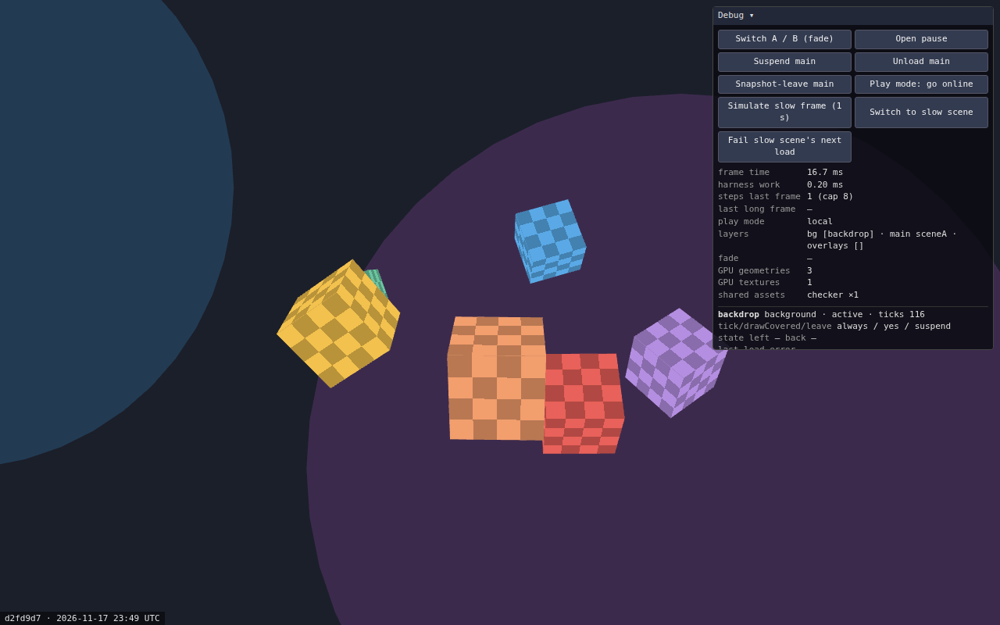
[backdrop], main sceneA, no overlays. The backdrop is a separate scene that always ticks. The cubes share one checker texture through the asset cache (1 user). Version label bottom-left: d2fd9d7 · 2026-11-17 23:49 UTC.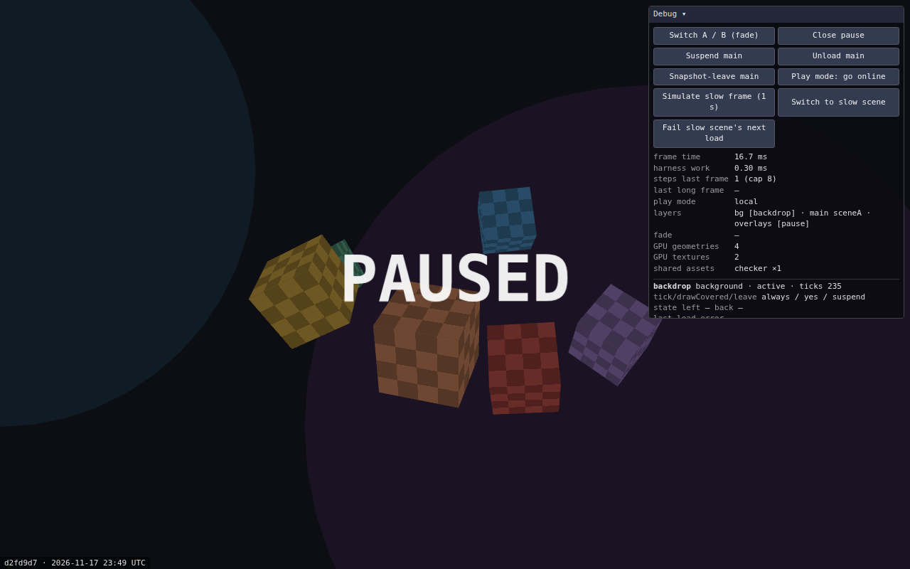
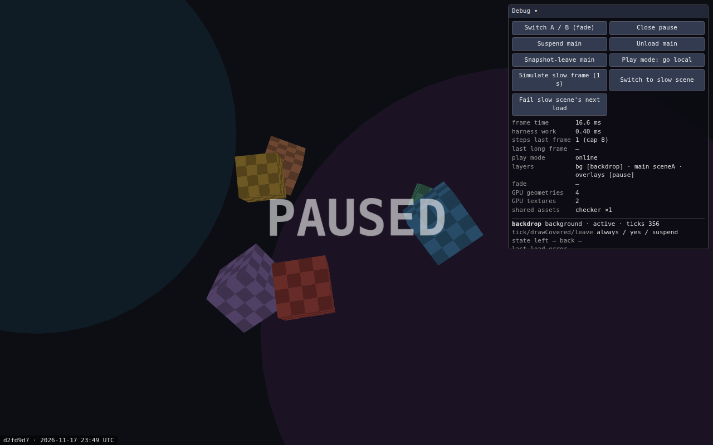
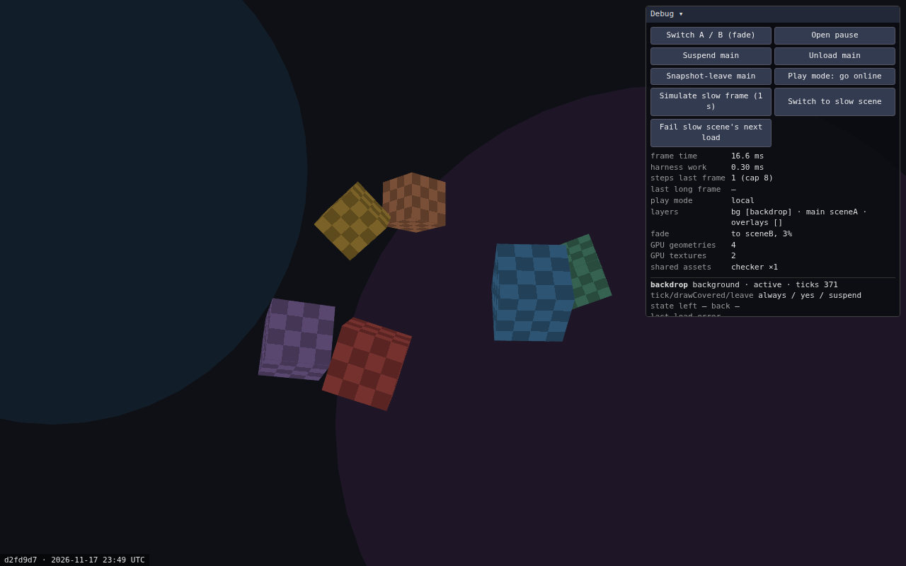
suspend: it keeps its state and objects.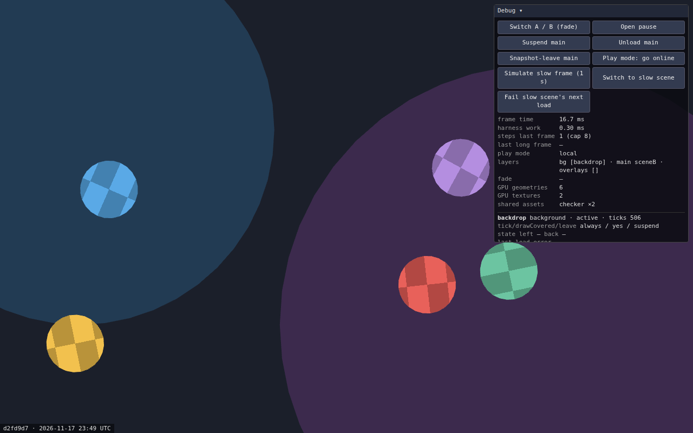
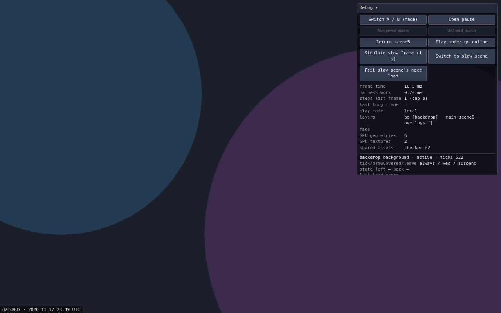
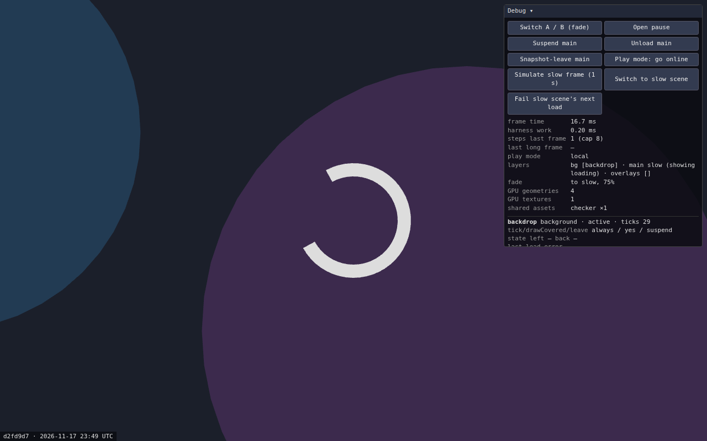
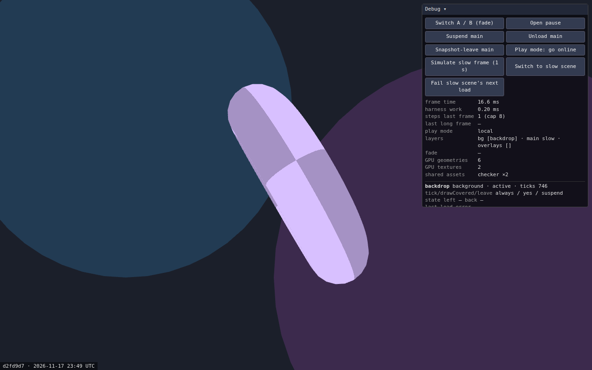
unload, so each visit starts fresh.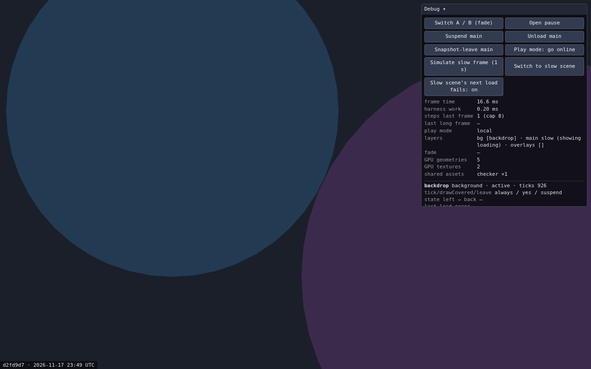
simulated load failure (GPU textures at failure: 3); GPU geometries 5 → 5, textures 2 → 2, checker users 1 → 1. Everything it built was freed by the harness.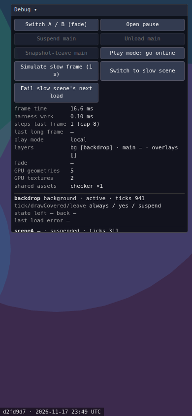
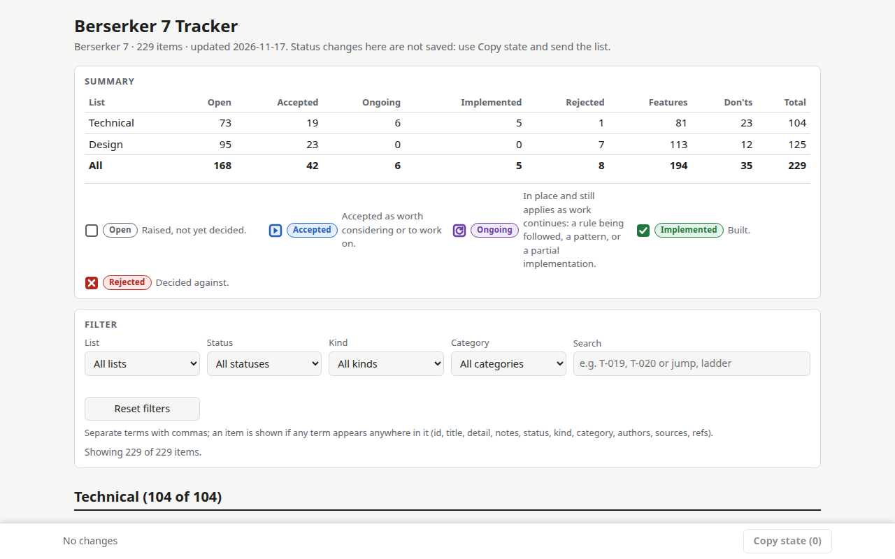
ongoing: 6 rules now in force for all game code (T-018, T-019, T-020, T-080, T-081, T-082).How the harness works
each frame(seconds):
1. clock: add frame time (capped at 0.25 s), run whole 1/60 s steps (at most 8)
→ tick every scene allowed to tick, in layer order: background, main, overlays
2. clear, draw every scene allowed to draw, in layer order, then the fade
3. end failed loads, apply queued requests in request order,
activate scenes whose load finished
4. advance the fade; swap the main scene at its midpoint
| Module | Job |
|---|---|
engine/clock.js | Fixed-step accumulator with frame-time and step caps (T-019, T-020, T-090). |
engine/harness.js | Layers, request queue, lifecycle driving, play mode, loading scene, freeing each scene's resources. |
engine/scene.js | Scene records, legal lifecycle steps, settings (tick, drawCovered, leave). |
engine/resources.js | List of things with dispose(), freed in reverse order. |
engine/asset-cache.js | Shared assets counted by user; the last release disposes. |
engine/transition.js | Fade timing and midpoint swap. |
scenes/* | Test scenes: backdrop, A, B, pause, slow, loading. |
debug/panel.js | Buttons for every behaviour; live state, ticks, memory counts. |
Scene contract in short
- A scene is a plain object:
{ settings, load, enter, tick, draw, suspend, resume, exit, unload }. load(context)builds three.js objects, passing each tocontext.track()and getting shared assets withcontext.acquire().enter()returns the state;tick()changes only the state;draw()makes the three.js objects match it. Lookups from state to meshes use aWeakMap.- Leaving:
suspendkeeps everything;unloadfrees everything;snapshotkeeps a copy of the state and frees the rest.
Process
- Every change went through a lane: one issue, one worktree, one pull request, reviewed and checked, merged only on the project owner's word. The live site was checked after each merge.
- Code reviews caught real problems before merge. On the harness, gristle found that a failed load left a scene stuck in
loading, a scene left while loading was never unloaded, leaving by unload kept a stale snapshot, and requests between frames could be lost. All fixed. - Discussion before building paid off twice: the scene system was designed before the loop, and the "how would a scene forget?" question turned option A into option C, so memory clean-up can't be missed by scene authors.
- Tracker triage through "Copy state" worked well: 52 items accepted in four pastes.
What went wrong or needs watching
| Issue | State | |
|---|---|---|
| tooling | "Provider turn failed" errors interrupted several turns on 16–17 Nov, mostly at steps that started background servers or browsers. Workaround: server and browser inside one Node script. Cause not found. | Workaround in every brief |
| process | The devlog's end-of-day "finalise" message is never sent when a summary already exists, so day summaries miss late events. | Backlog task recorded |
| check | One lane's browser check misread T-019 as open (it matched a reference inside another item). The data was right; the check was narrowed. | Resolved |
| rendering | The game uses antialiasing with pixel ratio capped at 2; T-092 advises against antialiasing at high pixel ratios. | Open, for the camera and pixel-look work |
| dependency | npm audit reports a high-severity ReDoS (GHSA-fc5q-39xc-vjpf) in picomatch 4.0.7, a file-pattern matcher used by Vite while building. Development tooling only: not in the published game, and the patterns it matches are our own. | Disregarded by the project owner |
| site | The landing page has no favicon; the Technophage MVP lays out 961 px wide on a phone. Both predate Berserker 7. | Open |
Tracker state at this milestone
| List | Open | Accepted | Ongoing | Implemented | Rejected | Total |
|---|---|---|---|---|---|---|
| Design | 95 | 23 | 0 | 0 | 7 | 125 |
| Technical | 73 | 19 | 6 | 5 | 1 | 104 |
implemented T-001 three.js · T-017 scenes and transitions · T-084 Vite · T-085 deploy with version stamp · T-090 frame-time cap
ongoing T-018 · T-019 · T-020 · T-080 · T-081 · T-082
Next
- Input: keys as named actions, one input frame per player per tick (T-053, T-022).
- Camera and pixel look: perspective or orthographic, pixel-stable rendering (T-006, T-005, T-003, T-092).
- First movement: a grey-box room on a 2D collision grid with a placeholder player (T-029).
- Later: interpolation (T-089), the devlog finalise fix.